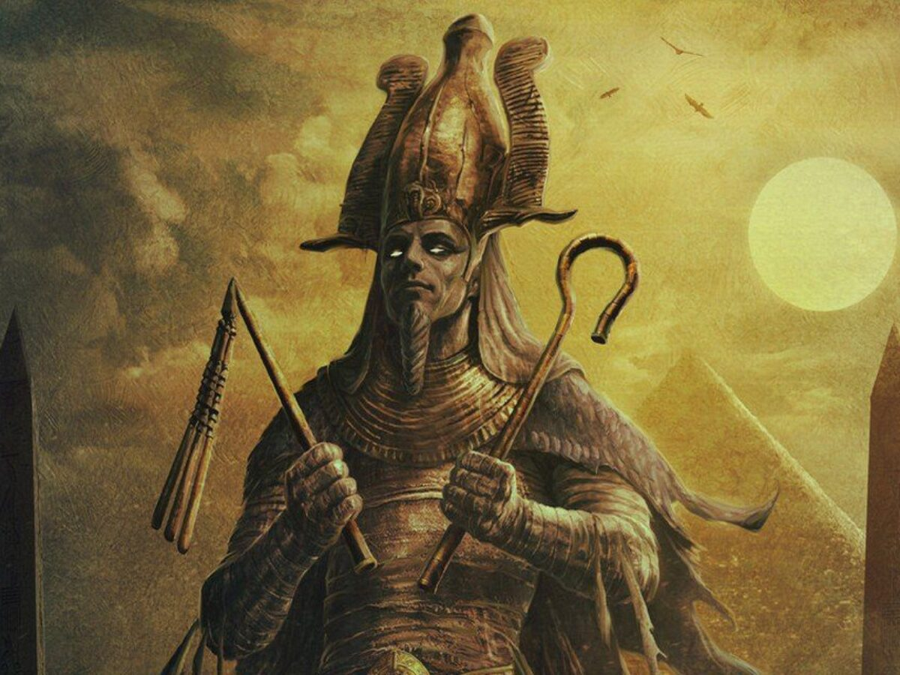

Quiz sobre o Deus Osíris
1.Em quantas partes o deus Set dividiu o corpo de Osíris ?
2.Quem ressuscitou Osíris ?
Hathor
3. Qual sentimento levou o irmao de osiris a causar sua morte?
4. Como deus osiris foi morto? (Múltipla escolha)
5. Escreva como deus Osíris é descrito nas escrituras egipcias:
